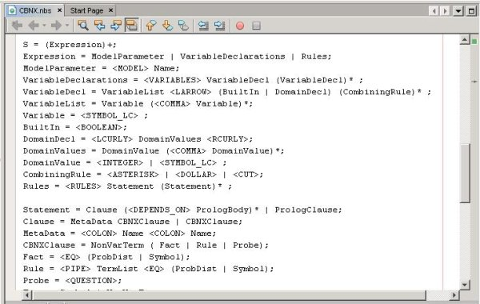
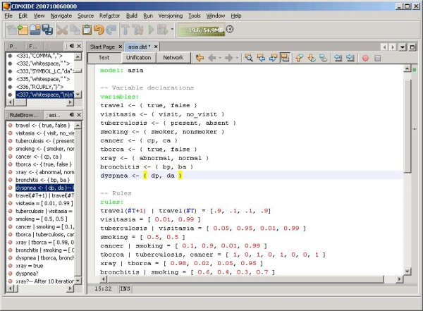
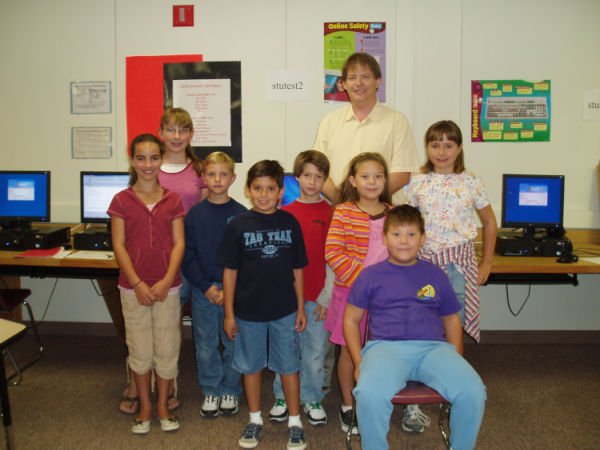
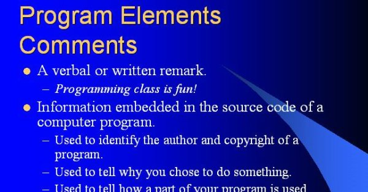
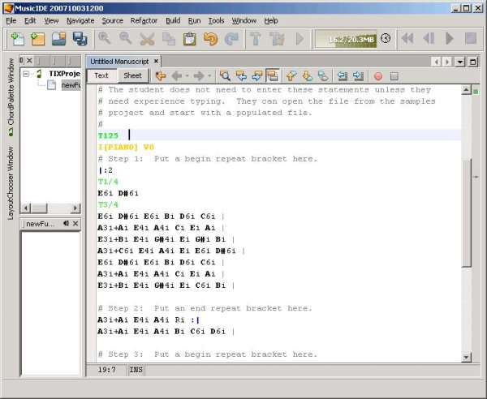
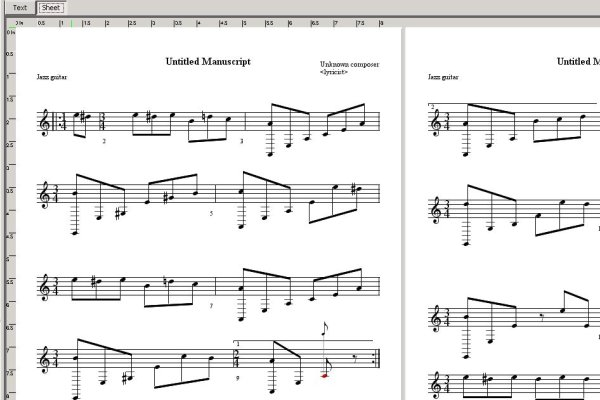
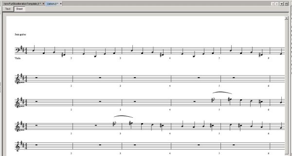
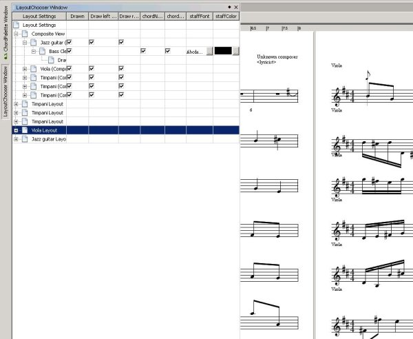

|
Peter Blemel |
Peter's Hot Links: |
Peter Blemel is a Swing desktop application developer. Here he talks about the applications he's been working on. Plus, he shows off his Music IDE and explains how he uses it to teach programming to kids!
I live in Albuquerque, New Mexico. I work for a research and development company, Management Sciences, Inc (MSI), which my parents started 30 years ago. The great thing about my job is that every few years I can answer "what do you do" differently, and still be working for the same company. Currently I'm designing and writing software for prognostic health management (PHM). Our primary focus is in situation-aware embedded systems. These are systems that learn to evaluate their own health and ability to complete a mission based on their own past performance, the kind of mission they are tasked to do, and the world around them. Essentially, the system itself can help extend its own life, which will save our customers' money. Our applications range from aircraft to wiring. The rest of my time is spent with my family, volunteering, and my other programming-related interests.
I have written several packages for Management Sciences that support probabilistic models, including Bayesian Networks and various flavors of Markov Models. We have a collection of 10 NetBeans modules that are added to the NetBeans Platform. Our applications use the chained NetBeans Platform. The one that is the most interesting is a Turing Complete probabilistic modeling language called Cognitive Bayesian INformation EXploitation (CBNX). We have an algorithm that performs in linear time, reducing many n-p hard problems into tractable ones. I am creating an IDE based on the NetBeans Platform that allows the user to write logic applications, visualize the relationships, and simulate them. Our target is embedded systems.
The MSI CBNX compiler is written in Java. The CBNX IDE is an application based on the NetBeans Platform. It makes use of the MultiView Windows API to provide an editor view and a graphical view that allows the user to see the compiled network in a second view. I integrated with the Visual Library API to draw graphs, but we are evaluating other commercial graphing packages. At first I just used the text editor to edit programs written in the CBNX language, and used the compiler to check for errors. That can be a time consuming process, but adding language support to the platform looked complicated, and I had higher priority things to do. Then I saw blog entries on how easy it was to use the Generic Languages Framework, also known as Schliemann, so I gave it a try. I had to modify our JavaCC grammar to make it LL(1), but I added lexical highlighting and syntax checking in less than a day. Here's a section of our grammar definition in Schliemann:

Since then I've learned how to add things to the Navigator that the Source Editor provides. I'm very impressed with how much functionality can be achieved with such a simple configuration file. I can't even begin to guess how long it would have taken me to integrate the CBNX parser with the Source Editor in that way. Here's some CBNX code, within the editor I created for it:

Yes, Transposix TABMentor. TABMentor is software for teaching people how to read and play music, specifically guitar, and things related to music education. It's a start up. My business partner, Steve Maase, is an accomplished professional guitar player and teacher who felt that none of the "Teach Yourself to Play" packages really met the needs of his students. So, we set about creating something that did. We didn't want to be in the business of writing music composition software, but our options were limited when we started. We had to write our own, to meet our needs, before we could get to what we really wanted to do.
The grace of God, persistence, and the support of my family and financers! This application is actually not new, but it has never really seen the light of day. Steve and I knew that we had to be Internet-centric, but he's not a coder. I started coding it in C++, but I liked the idea of using Java to get us delivered on multiple platforms. That was some time ago. At first we built our own Java framework. I worked with a great coder named Tim Casey that I had under contract at the time.
We tried early versions of the NetBeans Platform, but made a decision to stick with our own framework. When NetBeans Platform 4. 0 was released, we were still struggling due to lack of time and funding. I took another look and decided to integrate with it to solve a little of both our problems. Now we have 15 of our own modules to add to the platform and two plugins built from LGPL packages! The music modules under the hood are ours, but using an off-the-shelf framework saves time and money. The result is a complete music platform that is chained from the NetBeans Platform. We have several applications built on the chained NetBeans Platform. Even now, some of the educational features are just getting designed and coded.
Yes! My kids wanted to learn computer programming and my 7-year-old son was always asking "So, Dad. . . You workin' on NetBeans?" Maybe that's a sign that I'm working too much at home! I have been looking around a bit for something appropriate for kids his age, while still being able to include my 9-year-old daughter. There is a fair amount of material out there geared at teaching kids programming, including several commercial packages. After reading a few web pages I felt that some of it fell short of the mark for me. I want them to use something that we can "look under the hood of" and see how it's designed, organized, and put together.
I took a cue from the JFugue Music NotePad and pulled together the bits of my work, an editor, a visual package, etc, and created a Music IDE where the kids can express music as programs. I am using it to teach them programming concepts including modular design and constructs, everything from "comments" to "functions" and "loops". Once they have written a bit of their rock opera, they can immediately view it and listen to it. They can see and hear "bugs," and learn the process of fixing problems. Once they understand how to write programs in this "language," we can look at how the IDE is making it so easy for them. I have even written a Schliemann grammar to provide the kids with syntax checking in the editor, just like a "real" programming language. I will let them build UML models of their experience. At least, that's the plan. Only time will tell how it works out! Here's a pic of all of us together:

I usually start out with a short lecture. Our school has been fortunate and has a nice computer lab, complete with an overhead projector. I use slides to explain the concepts, and then I tell the kids how the concept can be seen in music. Here's a sample slide to give you an idea:

The kids get to work through an exercise in every class. We started out simple, with "Mary Had a Little Lamb. " The kids entered it into the IDE's editor. I have used a MultiView TopComponent that lets the kids switch from entering text to viewing their masterpiece. For more complex programs I let them create files from templates in the IDE, and then I walk them through making changes. I used the Schliemann API to provide syntax highlighting and grammar checking. The kids are learning how an IDE can show them the mistakes that they have made in their programs.
So far we have covered comments, statements, functions, and loops using repeat marks. We've done everything using the symbols you find in music. Most of the kids have at least a little bit of music background, and this seems to be working out nicely.
Here's a sample program the kids can write.

Then they can view their program as sheet music, as shown below, and play it back. They get to hear and see their program run.

That's "Für Elise".
Notice the cursor in the 9th measure? It bounces along while the music is played back, so the kids can follow where the computer is in their program.
Remember, this project is about teaching kids the basics of programming first. Then we can move on to the more advanced ideas like having the IDE create the code for them. The IDE has other TopComponents that allow the user to enter notes graphically, either by drag and drop or using instruments like the guitar. I haven't told the kids this, but the IDE supports code round trips for JFugue. If they change their work graphically in the manuscript, the code will be updated in the editor to reflect their changes when they switch back to the editor view. They can even import MIDI and other music documents, and create JFugue files from them!
Yes! Next week I'll introduce the idea of parallel processing with a piece that has multiple parts. We'll start with a round like "Row, Row, Row Your Boat" that has both multiple parts and repeats. I want them to type in something so they understand how to start and stop the voices at the right time. Then we'll bring out a masterpiece. The JFugue website has a Music Exchange page with "Pachelbel's Canon in D" already written as a JFugue input file. I have created a Template for it that the kids can use. It's a great example that I think the kids will like.

The IDE lets them look at the piece as a whole, or they can use the Layout Chooser TopComponent to view just one specific part like the Viola. The chooser slides in from the left side, and automatically hides itself too, which I think was clever of the NetBeans Platform architects.

CBNX and the Management Sciences projects are commercial applications, so they won't likely be released under LGPL or GPL. The Music IDE for teaching kids would make a good open source project. Steve teaches full time. I have a full time job and two kids, so sometimes progress on the software is a little slow. We are eager to get TABMentor out there, but this is a complex application and there have been issues with our code, and sometimes with Java, that kept us from putting it out there. We know that compromising on quality will only earn us a bad reputation. I have a short list of outstanding bugs to work through, but with some luck we'll be ready for users soon! Having GPL developers would help move the process along so we may make this open source.
For information about creating your own NetBeans Platform applications, see the following resources: